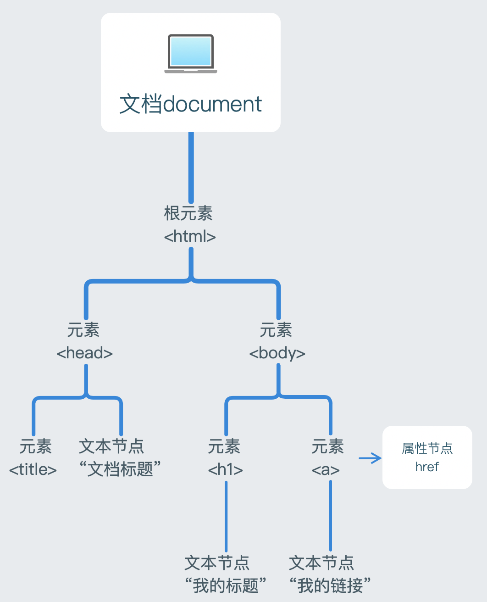

DOM
document object model
顶层对象document
文档对象模型，结构图如下：

document.documentElement 获取到整个html即root
节点类型nodeType 返回数字元素节点 1 标签
属性节点 2 他们的属性
文本节点 3 他们的文本 text
注释节点 8 comment
文档节点 9 document
获取属性节点
e.g. element.getAttributeNode(“width”) 行间属性
获取文本节点
e.g. span.firshChild
节点名称nodeName
元素节点返回大写标签名(string类型);属性节点返回属性名;文本节点返回#text
节点内容nodeValue属性节点的为属性值，文本节点的为文本内容，元素节点的为null
节点关系父子关系：上下级
兄弟关系：同级
祖先关系：当前节点上面所有节点统称
子孙关系：当前节点下面所有节点统称
想拿到所有后代用 祖先.getElementsByTagName(“”);
element.offsetParent 距离元素最近的有定位属性的祖先节点
如果祖先都没有定位，那么会获取到body
儿子节点childNodes：获取一个元素下的所有子节点(只获取到儿子一级)，包括文本节点、注释节点
children：获取一个元素下的所有==子元素节点== (只获取到儿子一级)
firstChild：获取第一个子节点(包括三种节点)
lastChild：获取最后一个子节点(包括三种节点)
父亲节点parentNode：获取一个元素的父节点
parentElement 不好用 只在ie可用
兄弟节点nextSibling：获取当前元素的下一个兄弟节点(包括元素、文本、注释节点)
nextElementSibling：获取当前元素的下一个兄弟元素节点
previousSibling：获取当前元素的上一个兄弟节点(包括元素、文本、注释节点)
previousElementSibling：获取当前元素的上一个兄弟元素节点
获取不到节点返回null
创建节点父节点.appendChild(element)
父节点.insertBefore(insertElement,beforeWhichElement) 待插入元素，要插到哪个元素之前f
若第二个参数为null(相当于父亲没有儿子)，则直接插入，此时效果同appendChild
法一：
var son = document.createElement(“标签名字”)
son.innerHTML=val
father.appendChild(son)
法二：
father.innerHTML += “\
针对子节点ChildNode的接口 都是插入到父亲底下,和son同级
son.before(xx) 将xx插入到son之前\
son.after(yy) 将yy插入到son之后\
father.replaceChild(newElement,oldElement) 应该先判断oldElement是否存在
son.replaceWith(newElement) | p.replaceWith(span)
删除节点- father.removeChild(element)
- 要删的元素本身.remove()
你可能不知道的坑💣
HTMLCollection V.S NodeList
相同点:
这两者都是伪数组，真对象
这两者都是动态的，若dom发生了变化，之前获取到的HTMLCollection或NodeList也会随之变化
两者都有item方法，可以通过索引来获取到数组中的元素，如collection.item(0)
HTMLCollection的item方法参数只能为数字,代表索引；
NodeList的item方法参数只能为数字,代表索引。
区别:
HTMLCollection包含的是元素节点Element，NodeList顾名思义包含的是所有类型的节点(包括文本节点|属性节点|注释节点等等)
HTMLCollection多了一个namedItem方法，参数可以为id或name(表单元素的name)，若id与name同名，以id优先。
通过querySelectorAll方法返回的是NodeList 这个方法返回的内容很全
通过getElementsByXXX方法返回的是HTMLCollection 方法名都告诉你了 getElements
所以只返回元素节点
HTMLCollection和NodeList都是动态的，具有实时性。
通过getElementsByxxx 返回的集合是动态的 实时的
But,通过querySelectorAll 返回的集合却是静态的 不具有实时性 (很特殊的一点)
举个🌰
1 | <body> |
qps打印出的是NodeList,里头只有2个元素
gps打印出的是HTMLCollection,里头有3个元素
说明querySelector获取到的是当时的元素，后续的变化不会影响获取到的值了
而getElementsByXXX获取到的是动态的值，后续的变化实时反应影响到值，使用的时候已经不是当时获取到的值了
所以按照需求选择方案
如果想安全点 不会受后面改变dom影响之前获取到的元素的使用的 就用querySelector
BOM
browser object model 顶层对象是window
window常用方法
- alert
- confirm 返回值true|false
- setInterval() | clearInterval()
- setTimeout() | clearTimeout()
1 | var timerID = setTimeout(fn,1000); |
open([页面地址]，[打开方式])
打开方式：_self本窗口打开 _blank新窗口打开 _parent
不写页面地址默认打开blank，不写打开方式默认是_blank
返回值：新窗口的window对象
前端会涉及跨域问题，若页面地址写一个百度的网址，是无法对百度网址的窗口对象直接进行操作的，因为跨了域。
close() 火狐无法关闭本窗口，除非设置某个值为true(about:config dom.allow.xxx)
window下的四大金刚
四个对象
navigator | location | history | screen
navigator 浏览器信息
navigator.userAgent
1操作系统
2渲染内核
3浏览器版本
location 页面URL相关信息
location.href 页面地址
location.hash 锚点 获取地址栏从#开始到后面的内容，包括#，格式为string
从#开始截止到下一个特殊符号前，例如?
神奇之处：这个hash不会因为页面刷新和被刷掉，刷新之后仍赖在地址栏上
使用：添加hash后，判断当hash为某个值时，状态为xx，这个xx状态就不会因为刷新页面而消失了。
- 通过a标签添加hash值 <a href=“#11” 点击a标签就给地址加上了#1
- 通过js代码添加hash值 location.hash = xx; 设置时忽略#，不用写#
location.search 获取地址栏从?开始到后面的内容，包括?，格式为string
从?开始截止到下一个特殊符号前，例如#
添加方法：
- 通过a标签添加search值 <a href=“?why” 点击a标签 #11就消失了，末尾加上了?why
- 用js代码添加search值的话，会加在#11之前，无法达到取消#不刷新(即重新刷新)的目的。
screen 屏幕对象
height | width 获取屏幕的宽度和高度，包括顶部地址栏和工具栏
availHeight | availWidth 获取屏幕的可用宽度和可用高度，不包括顶部地址栏和工具栏
availHeight<height 但 availWidth==width
对比：
document.documentElement.clientWidth/clientHeight 可视窗口的宽高，会随着拖动浏览器变化